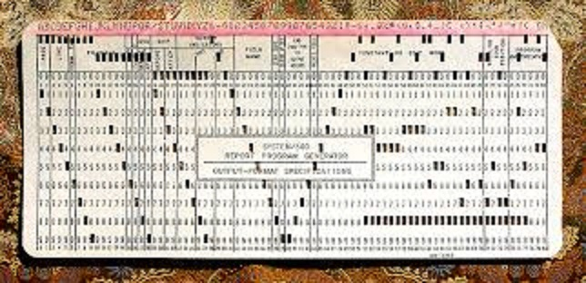
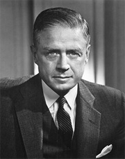
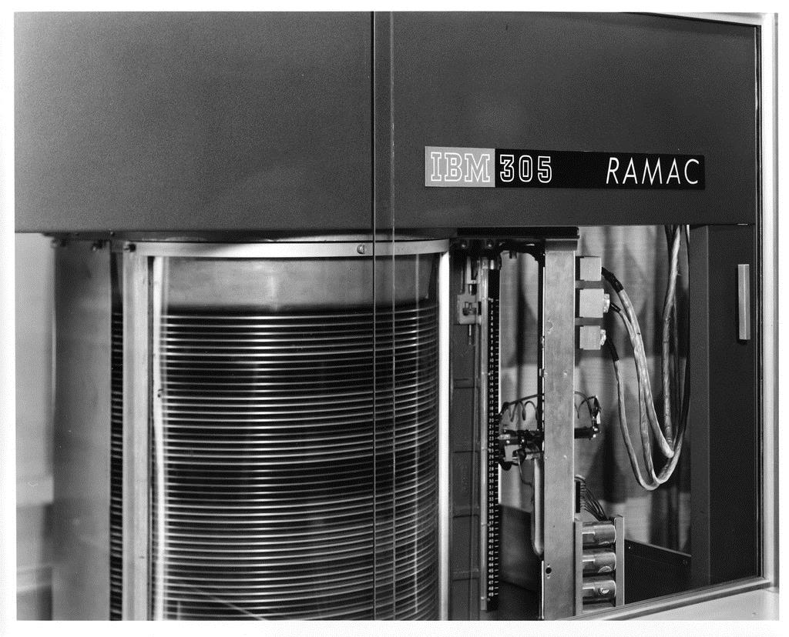
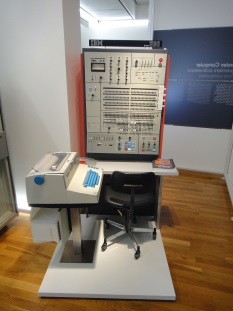
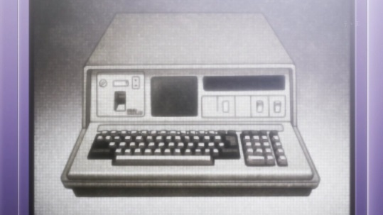
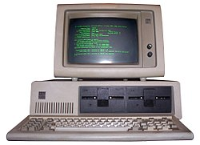
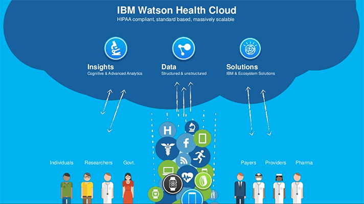
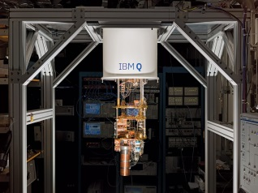
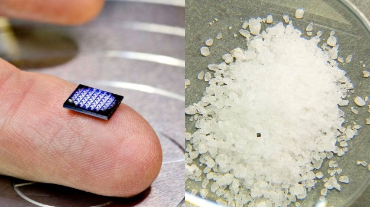

У истоков IBM стоял, американский изобретатель. Он родился в семье немецких эмигрантов, окончил Горную школу при Колумбийском университете, стал ассистентом профессора У. Трубриджа в Колумбийском, а затем ассистировал его же в бюро по переписи населения. В 1880-е годы Холлерит разработал и запатентовал оборудование для работы с перфокартами

Изобретение электрической табулирующей системы позволило Холлериту ускорить процесс подсчёта результатов переписи населения. Если на подсчёт в 1880-м году потратили восемь лет, то в 1890, благодаря табулятору, у бюро ушёл на это один год. После переписи в США Холлерит получил звание профессора в Колумбийском университете. Холлерит в 1896 году открывает компанию Tabulating Machine Company. Свои машины TMC продаёт железнодорожным компаниям, правительственным учреждениям, ведёт международную торговлю.
В 1901 году параллельно с TMC в США открыли Computing Scale Company, производившую весы. Эти весы упрощали продавцам жизнь, позволяя быстро подсчитать стоимость товара. Третьим «столпом» корпорации стала International Time Recording Company, производитель систем учёта рабочего времени. Хотя компания TMC переживала период бурного роста, здоровье ее создателя и вдохновителя неуклонно ухудшалось. Это и заставило его в 1911 году принять предложение миллионера Чарльза Флинта по покупке TMC. Сумма сделки была оценена в $2.3 миллиона, из которых Холлерит получил $1.2 миллиона. По сути, речь шла не о простой покупке акций, а о слиянии TMC с компаниями ITRC и CSC, в результате которого на свет появилась корпорация CTR(Computing Tabulating Recording). В 1914 году в должность генерального директора вступил Томас Уотсон, и компания начала специализироваться только на больших табуляционных машинах. В 1924 году с выходом на канадский рынок и расширением ассортимента продукции, CTR меняет название на International Business Machines или, сокращённо, IBM.
IBM 1930-1950 годах
В 1928 году компания новый тип перфокарты с 80 столбцами. Она получила название IBM Card и в течение нескольких последних десятилетий использовалась счетными машинами компании, а после и ее компьютерами. Еще одно значимое событие для IBM в это время стал крупный заказ правительства на систематизацию данных о рабочих местах для 26 миллионов людей. Сама компания вспоминает о нем как о "самой большой расчетной операции за все время". Кроме того это открыло двери IBM к другим правительственным заказам.
Есть несколько упоминаний о сотрудничестве IBM с фашистским режимом в Германии. Источником данных здесь служит книга Эдвина Блэка ("IBM and the holocaust" . Ее название недвусмысленно говорит, с какой целью применялись счетные машины IBM. Они вели статистику по заключенным евреям. Впрочем, по заявлению руководства IBM, компания лишь продавала Третьему Рейху оборудование, а как оно применялось дальше это их не касается. Так, кстати, поступали многие американские компании. IBM даже открыла завод в Берлине в 1933 году.
Впрочем, есть и обратная сторона в использовании оборудования IBM нацистами. После поражения Германии благодаря машинам IBM удалось отследить судьбы многих людей. Хотя и это не помешало различным группам людей, пострадавших от войны и Холокоста в частности, требовать у IBM официальных извинений. Компания приносить их отказывалась. Даже несмотря на то, что во время войны ее сотрудники, оставшиеся в Германии, продолжили свою работу, даже общаясь с руководством фирмы через Женеву. Однако сама IBM сняла с себя всякую ответственность за деятельность ее предприятий на территории Германии за период войны с 1941 по 1945 года. В США в течение военного периода IBM работала на правительство и далеко не всегда по своему прямому виду деятельности. Ее производственные мощности и рабочие были заняты выпуском винтовок (в частности Browning Automatic Rifle и M1 Carbine), прицелов для бомбометания, запчастей для моторов и т.д.
Технологический гигант IBM стоял у истоков персональных компьютеров. Началось всё c Mark I. Этот компьютер считается первым американским программируемым компьютером. Его построили в 1941 году. Разработчики во главе с капитаном 2-го ранга Говардом Эйкеном, инженером IBM, использовали наработки Чарльза Бэббиджа. Компьютер, собранный из 765 000 деталей, достигает в длину 17 метров, его высота — 2,5 метра. Весит машина 4,5 тонн. Инженеры использовали 800 километров проводов. Каждую секунду машина могла выполнить три операции сложения или вычитания. Умножение занимало 6 секунд деление — 15,3 секунды. Огромная машина заменяла собой двадцать операторов с арифмометрами.
IBM 1950-1970 года
В 50-х годах IBM получила очередной крупный заказ от правительства на разработку компьютеров для системы SAGE (Semi Automatic Ground Environment). Это военная система, предназначенная для отслеживания и перехвата бомбардировщиков вероятного противника. В 1956 года в должность главы IBM вступил сын Томаса Уотсона — Томас-Уотсон младший. Компания сфокусировалась на разработке и производстве компьютеров и программного обеспечения. Команда под руководством Джона Бэкуса в период с 1954 по 1957 годы разработала первый в мире язык программирования высокого уровня, имеющий транслятор и в дальнейшем получивший развитие вплоть до сегодняшнего дня — FORTRAN. Этот язык помог компании увеличить продажи компьютеров: он сделал работу с ними более «дружественной» для пользователей.
Не менее значимым для сегодняшней компьютерной техники было изобретение в 1956 году устройства, получившего название RAMAC 305. Он стал прообразом жесткого диска. Весил первый винчестер около 900 килограмм, а его емкость составляла всего 5 Мбайт. Главная инновация заключалась в использовании 50 алюминиевых круглых постоянно вращающихся пластин, на которых носителями информации являлись намагниченные элементы. Это позволило обеспечить произвольный доступ к файлам, что одновременно и значительно повышало скорость обработки данных. Но удовольствие это было не из дешевых — обходилось оно в сумму $50000 по ценам того времени.
В 1959 году появились первые компьютеры IBM на транзисторах, достигшие такого уровня надёжности и быстродействия, при котором ВВС США сочли возможным использовать их в системе раннего оповещения ПВО. Ещё одно изобретение, которое на долгие годы вошло в мир информационных технологий — дискета. Магнитные ленты в бобинах были хорошим накопителем, но имели один большой недостаток: скорость низкая из-за последовательного доступа к данным. В 1960-е годы команда Алана Шугарта в лаборатории IBM пыталась исправить этот недостаток. В 1964 году было представлено семейство IBM System/360, являвшееся: первыми универсальными компьютерами, первым спроектированным семейством компьютеров, первыми компьютерами с байтовой адресацией памяти и т. д. Первый стандарт языка был разработан в 1966 году и получил название Fortran 66.
IBM 1970-1990 года
В 1971 году компания представила первую 8-дюймовую дискету на 80 килобайт и дисковод для неё. В том же году Шугарт ушёл из компании и основал Shugart Technology, после чего присоединился к разработки мини-флоппи дисков. В сентябре 1975 года IBM выпустила портативный персональный компьютер 5100. Он работал на процессора IBM PALM с тактовой частотой 1,9 МГц, был оснащен от 16 Кб до 64 Кб оперативной и от 32 Кб до 64 Кб постоянной памяти. Эта профессиональная машина стоила около 20 000 долларов.
1981 год прочно вошёл в историю человечества как год появления Персонального Компьютера «IBM PC». 640 килобайт оперативной памяти и одного или двух флоппи-дисководов вполне хватало, чтобы исполнять операционную систему DOS, предложенную небольшой в то время компанией Microsoft, и некоторое количество приложений. Наряду с DOS предлагались модели на ОС CP/M-86 и UCSD Pascal P-system но эти системы не выжили, так как Microsoft предоставила уникальное, для того времени предложение: приобрести за единовременную выплату лицензию на поставку программного обеспечения на неограниченное количество компьютеров, что существенно понизило цену конфигурации c MS-DOS, чем привлекло большое количество покупателей и соответственно принесло широкую известность Microsoft. Ориентировочно в 1984 году была запущена серия AS/400 — мини-компьютер, предназначенный для бизнес-задач. В 1986 году IBM уступила 1-е место по продажам на ею же самой порождённом рынке персональных компьютеров.
Эра консалтинга
Консалтинг — это управленческое консультирование по широкому кругу вопросов в сфере финансовой, юридической, технологической, технической, экспертной деятельности, оказываемое внешними консультантами для решения той или иной проблемы. В 1990-х годах в бизнесе IBM всё отчётливее прослеживалось стремление сместить фокус бизнеса в сторону поставки услуг, в первую очередь консалтинга. Наиболее ярко это проявилось в 2002 году, когда IBM приобрёл консалтинговое подразделение аудиторской компании PricewaterhouseCoopers за $3,5 млрд. В настоящее время этот бизнес, влившийся в подразделение IBM Global Services, является самым доходным в структуре IBM, приносящим больше половины дохода компании. Фокусируя свой бизнес на поставке услуг, в 2005 году IBM продала за $1,8 млрд. своё подразделение по производству и продаже персональных компьютеров(линейки ThinkPad и ThinkCentre) китайской компании Lenovo. А в 2014 году компания Lenovo уже за $2,3 млрд купила у IBM ещё и подразделение, отвечавшее за разработку и производство x86-серверов (в основном линейки System X и BladeCenter). В, том же, 2014 году продав свои полупроводниковые фабрики компании GlobalFoundries, IBM объявила, что в сегменте полупроводниковых изделий она становится fabless-компанией, продолжив разрабатывать процессоры, но отказываясь от их производства.

Вместо производства «железа», IBM теперь, например, стремится стать мировым лидером в сфере информационной безопасности, постоянно расширяя своё подразделение IBM Security. Одним из крупнейших приобретений в этой области стала покупка в 2006 году за $1,3 млрд. компании Internet Security Systems (ISS). А в феврале 2017 года IBM объявила о приобретении уже 20-й по счёту компании в области IT-безопасности — это Agile 3 Solutions, разработчик программного обеспечения для управления рисками, связанными с уязвимыми данными в корпоративной среде. Примерно с 2007 года корпорация IBM начала работать в сегменте облачных вычислений и бизнес-услуг, доставляемых через интернет. Укрепляя свои позиции в данном секторе, в 2013 году IBM купила примерно за $2 млрд. крупного международного хостинг-провайдера — компанию. Которая владела сетью из 13 дата-центров в США, Сингапуре и Амстердаме, а в 2014 году объявила о вложении свыше $1,2 млрд. в строительство 15 новых дата-центров в рамках стратегии по расширению облачных сервисов на платформе IBM Cloud.
IBM активно развивает свой аналитический бизнес, который был сформирован на основе двух приобретённых компаний: это купленная в 2008 году за $5 млрд. компания Cognos и приобретённая в 2009 году за $1,2 млрд. компания SPSS — они и сформировали основной набор программных инструментов для бизнес-анализа и business intelligence. В рамках расширения аналитического бизнеса, в 2014 году IBM объявила об инвестировании $1 млрд. в развитие проекта Watson, и о создании нового подразделения когнитивных вычислений Watson Business Group, в задачи которого входит разработка и коммерциализация облачных когнитивных (познание, изучение) сервисов в таких областях как здравоохранение, финансы, путешествия, телекоммуникации розничная торговля. В январе 2016 года IBM приобрела, примерно за $2 млрд., цифровой бизнес компании The Weather Company , который был интегрирован в платформу Watson и другие облачные сервисы компании. Для развития лишь одного облачного сервиса компания IBM потратила свыше $4 млрд. на покупку IT-компаний из сектора здравоохранения, например в феврале, 2016 года IBM приобрела за $2,6 млрд. компанию Truven Health Analytics — предлагающую сервисы управления и анализа медицинской информации учреждениям здравоохранения, государственным органам и страховым компаниям.
В начале 2017 года был заключён альянс между компаниями IBM и Salesforce. В рамках, которого обе компании будут совместно продвигать инструменты прогнозной аналитики, а к системе IBM Watson будет подключена платформа искусственного интеллекта Salesforce Einstein, которая поможет лучше понимать и использовать на благо бизнеса генерируемую аналитическую информацию в области продаж. В марте 2017 года корпорация IBM объявила о проекте IBM Q — по созданию первого в мире универсального квантового компьютера. Доступ, к ресурсам которого будет предоставляться через облачную платформу IBM Cloud .
Планируется, что в течение нескольких лет будет создана универсальная квантовая вычислительная система для выполнения задач по разработке новых лекарственных препаратов, передовых материалов, исследования в области искусственного интеллекта, цифровой безопасности, логистики и финансовых сервисов. В марте 2018 IBM создала компьютер размером с крупицу соли
